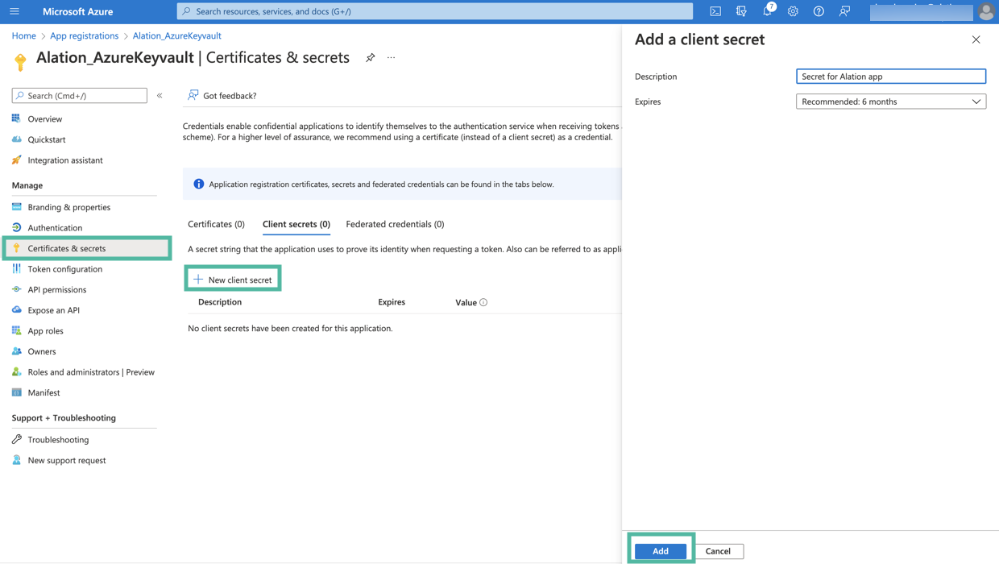
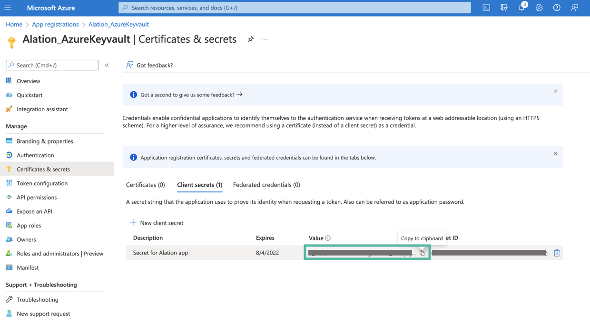

Integration with Azure Key Vault for Data Source Authentication¶
Applies from version 2022.1
Overview¶
Alation can be configured to retrieve the username and password of a database service account from an Azure key vault. In this case, the service account credentials are not stored on the Alation server. Alation reads the credentials from the key vault when a Data Source Admin launches metadata extraction (MDE), query log ingestion (QLI), and profiling or when users perform profiling of specific tables and columns.
Note
This configuration does not affect Dynamic Profiling when users are required to authenticate with their own database credentials.
Integration with an Azure key vault can be set up for data sources that use native or Custom DB connectors. Data sources added on the OCF framework and BI sources do not support this configuration.
To set up the integration with an Azure key vault for a data source:
Perform the configuration in MS Azure portal and collect the information required for configuring the Alation server. Refer to Registering an Application for Azure Key Vault Integration below for instructions.
Perform the configuration on the Alation server using the information you collected in MS Azure portal. Note that this configuration requires SSH access to the Alation server and the use of the Alation shell. Refer to Configuring Integration with Azure Key Vault for a Data Source below.
Note that the configuration on the Alation server needs to be performed for every data source that you want to work with an Azure key vault.
Registering an Application for Azure Key Vault Integration¶
Use the steps in this section to register an application in Azure Active Directory in order to configure integration with an Azure key vault for your data sources in Alation.
During the configuration in Azure, collect these values while you are performing the steps and store them safely:
Application (client) ID
Application client secret value
Key vault Directory ID (Tenant ID)
Key vault URI
Name of the key vault secret that stores the username of the service account
Name of the key vault secret that stores the password of the service account.
These values are required for configuration in Alation.
Register an Application and Get the Client ID and Secret Value¶
Sign in to Azure portal.
If you have access to multiple tenants, make sure to switch to the tenant in which you want to register the application.
Go to Azure Active Directory.
In the left-hand menu, under Manage, select App registrations and then click New registration.
Note
You can refer to the following Microsoft documentation about registering an app: Quickstart: Register an app in the Microsoft identity platform
On the Register an application page that opens when you begin registering an app, enter a display name for your application.
Select an appropriate value under Who can use the application or access this API?
Leave the field Redirect URI (optional) empty. Do not select or enter any values.
Click Register to complete the app registration.
After your application is registered, you will be navigated to its Overview page. Under Essentials, look for Application (client) ID. This value will be required during the configuration on the Alation server. Store this value safely.

Next, you will need to generate a client secret for your registered app. In the left-hand menu, select Certificates & secrets > Client secrets and then click New client secret.
Add a description for your client secret.
Select an expiration period for the secret or specify a custom lifetime.
Click Add.
The secret will be added and its value will be available in the Value column of the table with secrets. The value of the secret is required for further configuration on the Alation server. Store this value safely. It is never displayed again after you leave this page.

Next, collect the information from the key vault and make sure the database credentials that you want to use for authentication in Alation are available there.
Create a Key Vault and Collect the Vault Information¶
If a key vault does not exist, follow these steps to create it:
On the homepage of Azure Portal, click Create a resource.
In the Search box, enter Key Vault.
From the results list, choose Key Vault. This will open the Key Vault resource page.
Click the Create button to begin creating a new key vault. This will open a new key vault editor page.
Select the appropriate Subscription and Resource group.
In the Key vault name field, enter a name for your key vault.
Make sure that the values for the Region and Pricing tier fields are correct.
Click Next: Access policy at the bottom of the page.
Add Get and List permissions for Key permissions.
Add Get and List permissions for Secret permissions.

Select your registered application as the principal in the Select principal field.
Click Add. The policy will be added to the key vault.
Select Review + create. This will start the deployment process for your key vault. After Azure confirms the deployment, go to the resource page for your new key vault.

{kind=link}
On the Overview tab of the key vault page, look for Directory ID and Vault URI. These values are required for configuration on the Alation server. Store these values safely.

Next, add the secrets that will be used in the integration with Alation. Click the Secrets tab from the sidebar to open the Secrets page.
You will need to create two secrets for the data source catalogued in Alation: one to store the username and the second to store the password. Click Generate/Import to begin creating a secret.

In the Name field, specify a name for the secret. The Name field serves as the identifier of the secret. This value is required for the configuration in Alation. Store this value safely.
In the Value field, specify the username of the service account that should be used by Alation to authenticate on the data source.
If necessary, set the activation and expiration dates according to your organization’s password policy.
Click Create.

Create one more secret for the value of the service account password. The value of the Name field will be required for the configuration on the Alation server. Store this value safely.
Next, proceed to configure integration with the Azure key vault on the Alation server: Configure Authentication with Azure Key Vault for a Data Source.
Configuring Integration with Azure Key Vault for a Data Source¶
Follow the steps below to configure your data source to read the service account username and password for metadata extraction (MDE), query log ingestion (QLI), and Sampling and Profiling from an Azure key vault.
This configuration requires SSH access to the Alation server and access to the setting page of the data source (Server Admin role or Data Source Admin privileges).
Note that before you perform this configuration, the Service Account section of the General Settings tab of the data source settings page only has the option to enter the username and password. After you enable key vault integration for this data source, the UI of the Service Account section will change and display a dropdown list that will allow for selecting authentication with Azure key vault.
Before enabling authentication with Azure key vault:
After enabling authentication with Azure key vault:
To integrate your data source with an Azure key vault:
From the Alation UI, get the ID of the data source: How to Find Data Source ID.
Make sure you have the required information from Azure portal at hand:
Application (client) ID
Application client secret value
Key vault Directory ID (Tenant ID)
Key vault URI
Name of the key vault secret that stores the username of the service account
Name of the key vault secret that stores the password of the service account
Use SSH to connect to the Alation server.
Enter the Alation shell:
sudo /etc/init.d/alation shell
To use an Azure key vault with Alation, the Alation AuthService component must be enabled. Check if it is enabled on your instance using the alation_conf command:
alation_conf alation.authentication.service.enabledThe output will show if the parameter is set to
TrueorFalse.If the
alation.authentication.service.enabledparameter is set toTrue, AuthService is already enabled. If it is set toFalse, change it toTrueusing the commands below.Warning
Enabling AuthService requires a restart of the Java component, which will cause the Alation UI to reload. Alation recommends to perform this configuration during off-peak hours so that users do not lose their work.
6.1. Change the value to True:
alation_conf -s True alation.authentication.service.enabled
6.2. Deploy the configuration:
alation_action deploy_conf_all6.3. Restart the Java component:
alation_supervisor restart java:*
After making sure that AuthService is enabled, enter the Django shell:
alation_django_shell
Run the command below to begin the configuration:
from rosemeta.one_off_scripts.azure_keyvault_utils import *
Note
You can view the help for the key vault configuration in the console by running the following command:
show_help()
9. Create a new Azure key vault connection using the
create_new_azure_keyvault_config function. It takes the following mandatory arguments:
config_name: name for the Azure key vault configuration you are creating. Alation will identify this configuration using this name. It can be used for managing this specific key vault connection and will be required for linking the key vault connection to a specific data source.Note
Store the value of the
config_nameproperty safely. You will need it for managing this key vault connection if necessary.
tenant_id: key vault Directory ID
vault_url: key vault URI
client_id: application (client) ID of the application registered in Azure for the integration with AlationFormat:
create_new_azure_keyvault_config('config_name', 'tenant_id', 'vault_url', 'client_id')Important
The order of the arguments cannot be changed and should always be
config_name,tenant_id,vault_url,client_id. These four values are mandatory.Use single quotes when listing the values.
Example:
create_new_azure_keyvault_config('azure_keyvault', '784e800a-4684-4d76-9548-b1jcf312f0ff', 'https://el-keyvault-for-alation.vault.azure.net/', 'fe5eb2dc-7b85-4df0-a608-109e879d20bf')
Next, you will be prompted to enter the client secret. As you type, the secret will not be displayed in the terminal window. The prompt accepts input from the clipboard. After entering the secret, press Enter. The client secret value is encrypted and stored as an encrypted field.
Next, you need to link the key vault connection to the data source. One key vault connection identified with a unique
config_namecan be used for multiple data sources. This configuration object can connect multiple data sources to the same key vault. However, the links between a specific data source and the credentials must be created for each data source. You will use thelink_keyvault_to_datasourcefunction to create a link between a data source and a key vault. It takes the following arguments:ds_id: the Alation ID for the data source that will use key vault to read the service account credentialskeyvault_config_name: the value ofconfig_nameof this Azure key vault configuration
Format:
link_keyvault_to_datasource(<ds_id>, '<keyvault_config_name>')
Important
The order of the arguments cannot be changed. Use single quotes when listing the values.
Example:
link_keyvault_to_datasource(43, 'azure_keyvault')
When you link the data source to Azure key vault, the Service Account field on the data source General Settings page will display a dropdown allowing Data Source Admins to select Azure key vault as the source of the service account credentials.
Exit the Django shell:
exitExit the Alation shell:
exit
Next, log in to the Alation UI to complete the configuration in the data source settings.
Configuring Authentication with Azure Key Vault in Data Source Settings¶
Use the steps in this section to configure your data source to read the service account credentials from an Azure key vault.
Log in to Alation and go to the settings page of the data source for which you’re setting up authentication with Azure key vault.
Open the General Settings tab of the settings page and locate the Service Account section.
Select Azure Key Vault from the service account dropdown:
Click the Click here link next to the setting Currently saved keyvault identifier pair is… This will display two input fields, Keyvault Username Id and Keyvault Password Id:
As the Username Id, enter the name of the Azure key vault secret that stores the username of the database service account.
As the Password Id, enter the name of the Azure key vault secret that stores the password of the database service account.
Click Save. These identifiers will be used to look up the actual username and password stored in the Azure key vault.
Now, when a Data Source Admin performs MDE, QLI, Sampling, and Profiling, Alation will read the Service Account credentials from the Azure key vault.
Deactivating Integration with Azure Key Vault for a Data Source¶
It is possible to deactivate authentication using Azure key vault for a data source. To deactivate it, on the data source Settings page > General Settings tab > Service Account section, select Stored Credentials from the where to read credentials from list. This will disable the association with the key vault for this data source. When a Data Source Admin performs the next MDE or QLI or when users run Sampling and Profiling, the authentication will use the basic built-in authentication with the service account credentials stored on the Alation server.
Important
If you deactivate the Azure key vault connection for a data source, make sure to provide valid service account credentials.
Troubleshooting¶
Error |
Use case |
Solution |
|---|---|---|
Error verifying DB credentials |
Admin gets the Error verifying DB credentials in the Service Account section or in the Job History table during for MDE |
Check the following:
|
Updating the Key Vault Connection Parameters¶
It is possible to update an existing Azure key vault configuration object that is identified with a unique config_name. An Azure configuration object stores the association between the AuthService configuration object (config_name) You can update any of the parameters of a configuration, including the value of the client secret.
To update an existing Azure key vault configuration, perform the following steps:
Prepare the values of these properties of the Azure key vault configuration object you are about to update.
config_name: the configuration object name that was provided when this configuration object was createdtenant_id:the key vault Directory IDvault_url: the key vault URIclient_id: the Application (client) ID of the application registered in Azure for the integration with Alation
If you are updating any of them, prepare all the new values. Even if you only want to update the client secret, you still need to pass all the existing values in the update function.
Prepare the new client secret value if it needs to be updated.
Use SSH to connect to the Alation server.
Enter the Alation shell:
sudo /etc/init.d/alation shell
Enter the Alation Django shell:
alation_django_shell
Run the command below to begin the configuration:
from rosemeta.one_off_scripts.azure_keyvault_utils import *
You will use the update function update_existing_keyvault_config specifying the new and existing mandatory values. You can update the existing values and the client secret value:
Update the configuration properties without updating the client secret value¶
Format¶
update_existing_keyvault_config(<config_name>, <tenant_id>, <vault_url>, <client_id>)
Important
The order of the properties cannot be changed.
Example¶
update_existing_keyvault_config('azure_keyvault', '784e800a-4786-4d74-9358-b1jcf312l0ff', 'https://el-keyvault-for-alation.vault.azure.net/', 'fa5eb1dc-7b67-4dc0-a608-108e878d22bd')
This command will update the existing values of the mandatory configuration properties.
Update the client secret value¶
Format¶
update_existing_keyvault_config(<config_name>, <tenant_id>, <vault_url>, <client_id>, update_client_secret=True)
Example¶
update_existing_keyvault_config('azure_keyvault', '784e800a-4786-4d74-9358-b1jcf312l0ff', 'https://el-keyvault-for-alation.vault.azure.net/', 'fa5eb1dc-7b67-4dc0-a608-108e878d22bd', update_client_secret=True)
This command will result in a prompt to specify the new secret value without displaying it in the console.
Exit the Shell¶
Exit the Django shell:
exitExit the Alation shell:
exit
Deleting a Key Vault Configuration¶
At this time, deleting a key vault configuration from the Alation server is not supported.